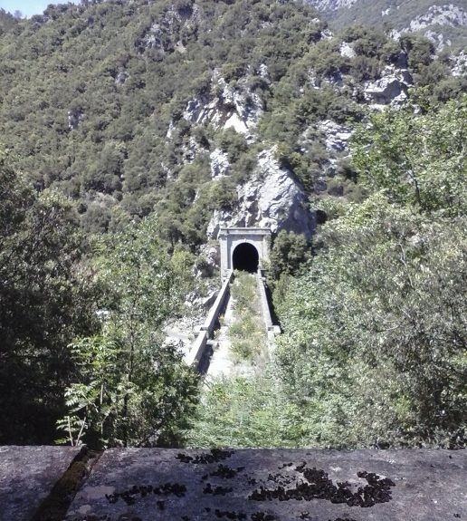

A la sortie de la première courbe de la route départementale après Saint Martin en allant vers Perpignan, se trouve le majestueux viaduc de Rebuzo (ou Rébuzeau) traversant l'Aude entre deux tunnels ferrovières. A l'intérieur de chacun des deux piliers une cache à mines comme dans le grand tunnel de la Pierre-Lys et à la gare. Vraiment dès la construction on s'est donné les moyens de détruire ce passage "convoité ?" vers l'Espagne (par où ? rappel du glacis que cette région a longtemps constitué contre les envahisseurs du Sud?).

Le pont ferrovière de Rebuzo, d'un tunel à l'autre
vue depuis le chemin de Planèses

Le pont ferrovière de Rebuzo, vue depuis le castel d'en prat
A venir : Quelques photos de ce pont dont celle des échelons rouillés ? (si j'ai encore le courage de descendre avec l'échelle prète à se décrocher...)
Pour l'instant, en attendant, quelques cartes postales anciennes.

Le pont ferrovière de Rebuzo
en venant d'Axat

Le pont ferrovière de Rebuzo
en venant d'Axat aussi, mais avec en arrière plan le pont de l'ane
(centré sous la grande arche),
le photographe a du bien s'amuser...
Il existe des cartes postales anciennes avec vue en venant de ST Martin (vues sur internet), mais je ne les ai pas dans ma collection...